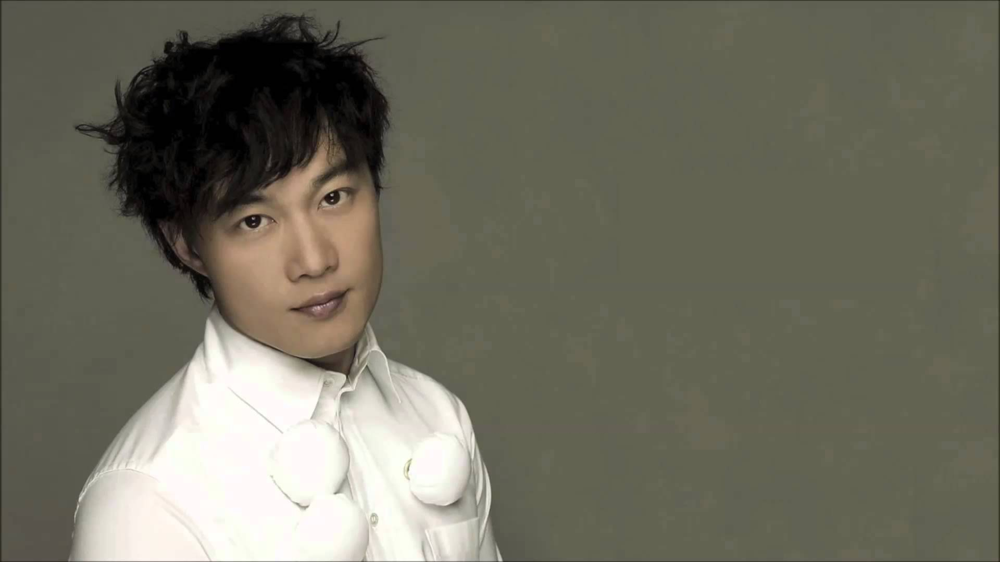

陈奕迅
陈奕迅（Eason Chan），1974年7月27日出生于香港，中国香港流行男歌手、演员，毕业于英国金斯顿大学。
1995年因获得第14届新秀歌唱大赛冠军而正式出道。2010年凭借剧情片《金钱帝国》获得星光大典港台年度电影男演员奖。2011年成立个人音乐制作公司EAS
MUSIC。2015年凭借专辑《米·闪》获得第26届台湾金曲奖最佳国语男歌手奖。2016年举行“Another Eason's LIFE
世界巡回演唱会”。2017年5月18日发行国语EP《放&披风》，包含两首全新国语双单曲《放》和《披风》。